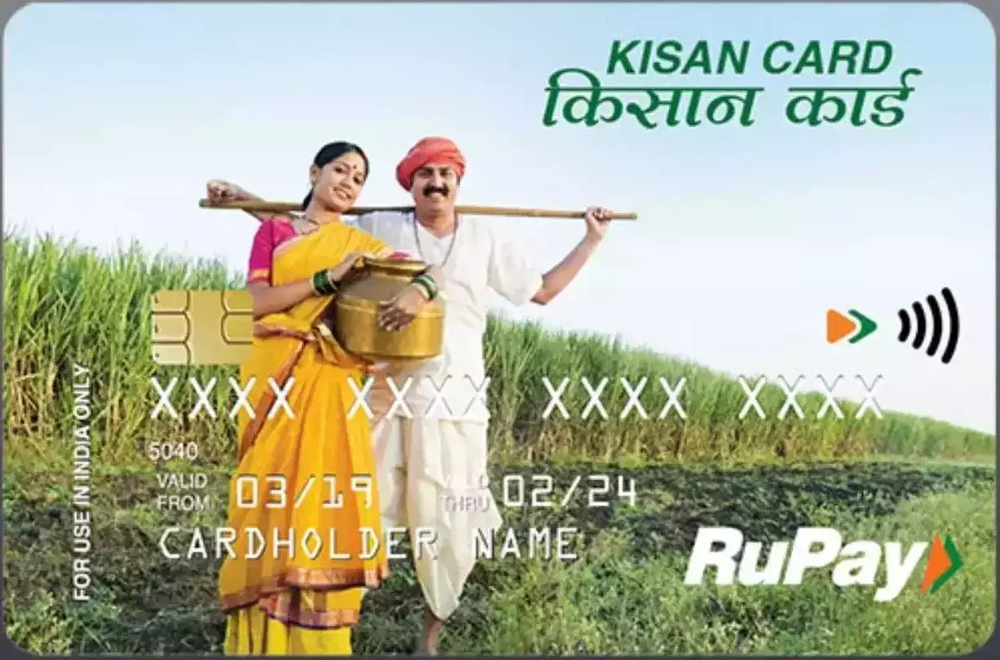
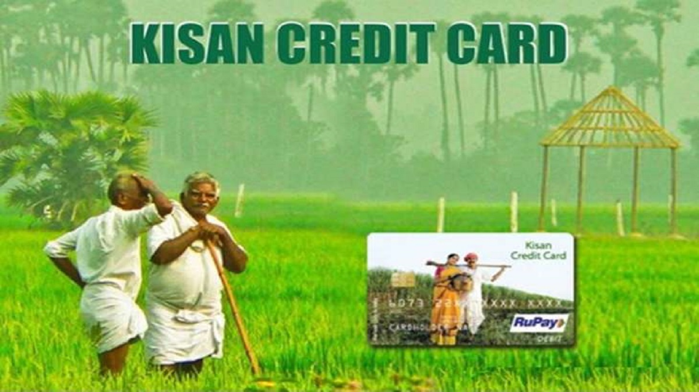

The Kisan Credit Card (KCC) scheme was introduced in 1998 for issue of Kisan Credit Cards to farmers on the basis of their holdings for uniform adoption by the banks so that farmers may use them to readily purchase agriculture inputs such as seeds, fertilizers, pesticides etc. and draw cash for their production needs.
Objectives:
The Kisan Credit Card scheme aims at providing adequate and timely credit support from the banking system under a single window with the flexible and simplified procedures to the farmers for their cultivation and other needs as indicated below :
1. To meet the short term credit requirements for the cultivation of crops;
2. Post-harvest expenses;
3. Produce marketing loan;
4. Consumption requirements of farmer household;
5. Working capital for maintenance of farm assets and activities allied to agriculture;
6. Investment credit requirement for agriculture and allied activities
Types of Cards
1) Magnetic Stripe Card with PIN
• ISO IIN for access to all ATMs and micro ATMs.
2) Magnetic Stripe Card with Biometric Authentication
• ISO IIN and Aadhaar-based biometric authentication.
3) Biometric Authentication Only
• For customer bases using existing centralized biometric infrastructure.
4) EMV and RUPAY Compliant Chip Cards
• Magnetic stripe, PIN, and ISO IIN.
5) Biometric Authentication and Smart Cards
• Common open standards by IDRBT and IBA for seamless transactions with dealers and crediting sales proceeds.
Documents Required
1. Application Form.
2. Two Passport Size Photographs.
3. ID proof such as Driving License / Aadhar Card / Voter Identity Card / Passport.
4. Address Proof such as Driving License, Aadhar Card.
5. Proof of landholding duly certified by the revenue authorities.
6. Cropping pattern (Crops grown) with acreage.
7. Security documents for loan limit above Rs.1.60 lakhs / Rs.3.00 lakhs, as applicable.
8. Any other document as per sanction.

Eligibility is primarily for farmers engaged in agricultural activities, including individual farmers, joint farming groups, and tenant farmers. The scheme is available to all small and marginal farmers as well as larger farmers.
KCC offers several benefits, including low-interest rates, flexible repayment options, and the ability to withdraw funds as needed. It also facilitates hassle-free credit access for agricultural inputs and related expenses.
Farmers can apply for the KCC at their local bank branch or through the bank's online portal. They need to fill out the application form and submit the required documents.
The credit limit for KCC is determined based on the scale of finance prescribed by the government, the landholding of the farmer, and their repayment capacity. The limit can range from a few thousand to several lakhs of rupees.
Yes, the government provides interest subsidies on KCC loans, usually offering a lower interest rate for loans taken for agricultural purposes. Additionally, prompt repayment may qualify borrowers for further concessions.
The repayment period for KCC loans is generally up to 12 months for short-term loans, while long-term loans can have varying repayment schedules based on the crop cycle and specific agreements with the lending bank.
Kisan Credit Card Scheme
The book on the Kisan Credit Card (KCC) scheme provides essential technical information within agricultural finance. It offers unique insights not typically found in current banking literature, making it a valuable reference for sourcing, appraising, monitoring, and developing KCC portfolios. Its primary objective is to deepen rural bankers' understanding of farms, farmers, crops, and their management practices.
READ
Kisan Credit Card Scheme
The Kisan Credit Card (KCC) scheme simplifies credit delivery by integrating financial services for farmers, promoting financial inclusion and reducing dependency on informal credit sources. It also encourages responsible borrowing and sustainable farming practices through structured credit facilities and timely repayment incentives.
READ
Kisan Credit Card Scheme
The Kisan Credit Card (KCC) scheme fosters agricultural growth by promoting technological adoption and modern farming practices through accessible credit facilities, thereby contributing to rural economic development and food security.
READ